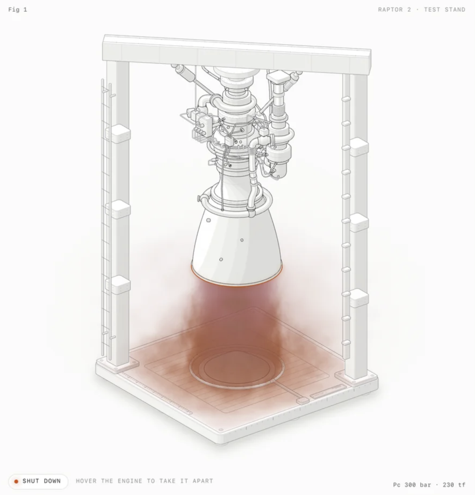
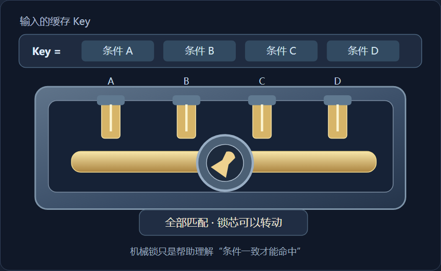
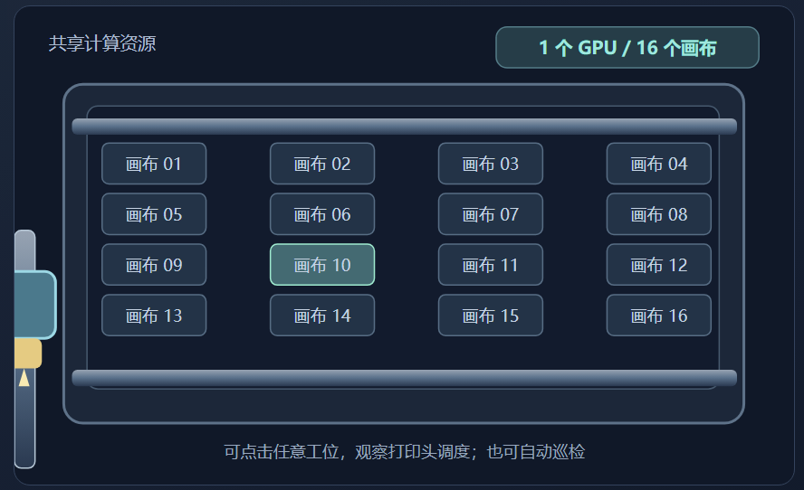
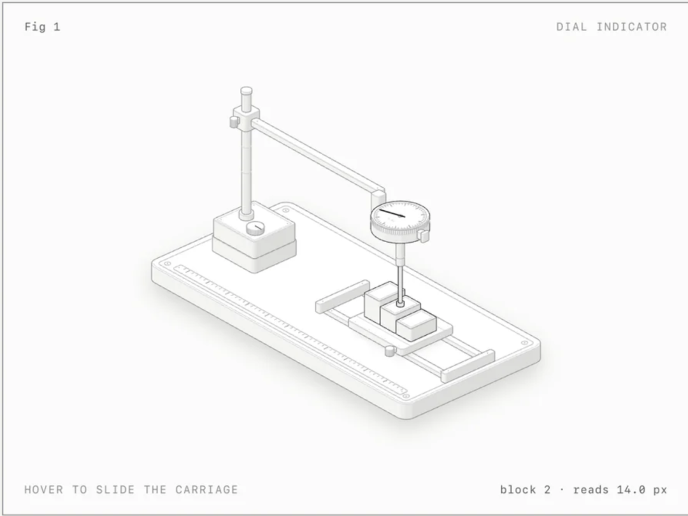
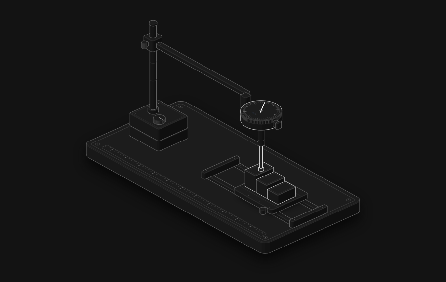
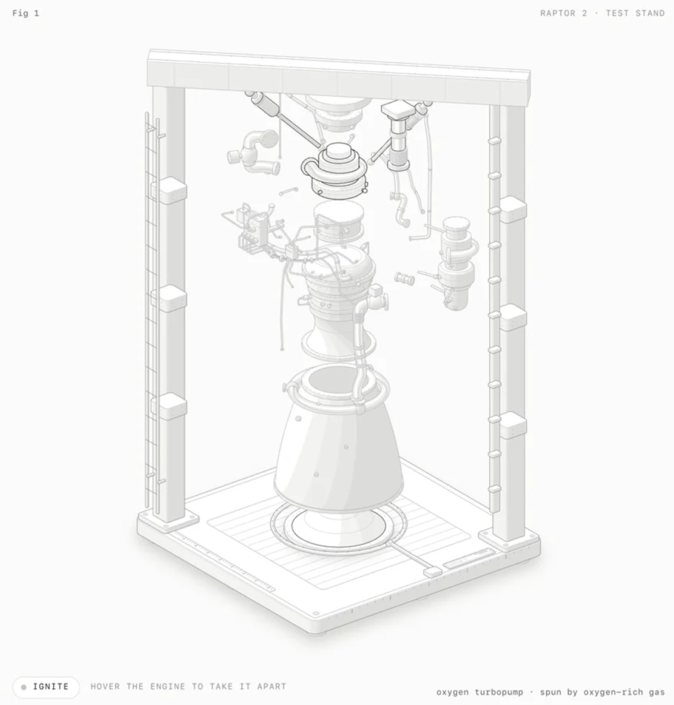
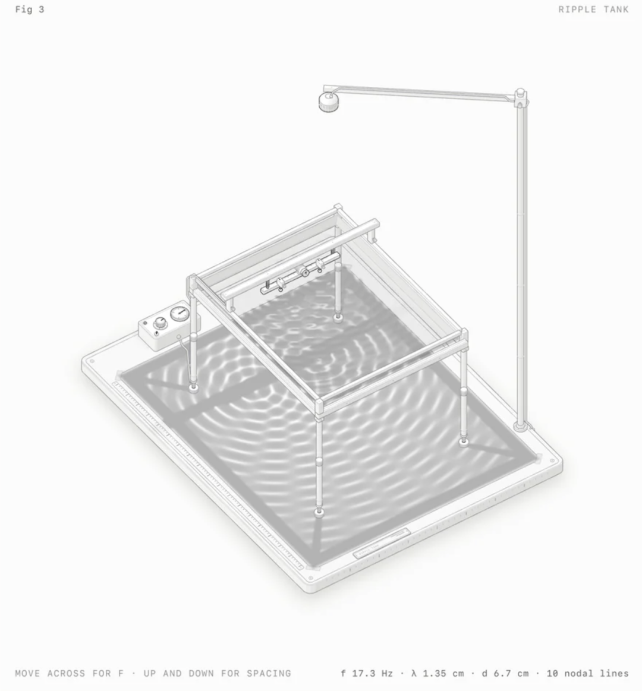
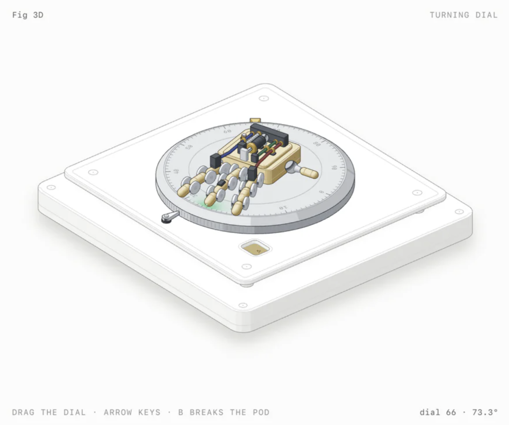
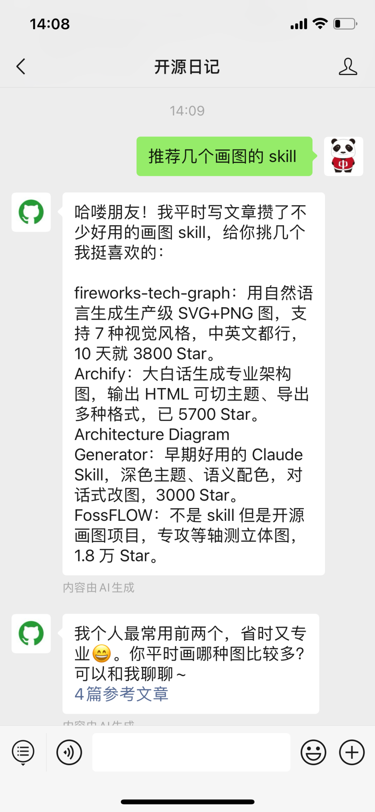

大家好，我是熊叔，今天我们继续逛 GitHub。
平时写技术文章，配图一直是件麻烦事。
比如解释缓存机制、数据库连接池、GPU 调度这些概念，画几个方框和箭头很容易，但是想让读者看明白里面的数据怎么流动、各个模块怎么协作，还得花不少时间设计。
涉及机械结构、设备运行原理的时候，一张静态图片往往讲不清楚。
最近在 GitHub 上发现一个挺有意思的项目，叫 Anatomy。
它是一个 Claude Code Skill，可以根据技术概念生成可交互的等距模型，支持 SVG、WebGL 和实验性的 3D 效果。

上面这台火箭发动机就是官方案例，发动机主体和管路由 SVG 绘制，喷射的火焰交给 WebGL 处理，还能通过鼠标进行交互。
Anatomy 有意思的地方，是让 Claude 先想办法用一台机器解释技术原理，再把结构和运动过程做出来。
下面看看几个具体案例。
把技术原理变成一台机器
比如解释缓存机制，普通流程图一般是检查缓存、命中返回、未命中重新计算。
Anatomy 换了个思路，把缓存 Key 的匹配过程设计成一把机械锁，只有弹子全部匹配，锁芯才能转动。

项目还把 GPU 共享资源设计成一台龙门绘图机，让同一个打印头依次移动到 16 个工作位置，帮助理解资源如何在多个任务之间共享。

我觉得它最有价值的是这种技术类比能力。
机械结构要能准确表达技术逻辑，否则模型画得再漂亮，也只是一个动画。
当然机械锁只能说明缓存匹配的问题，有关缓存失效、淘汰策略等细节还需要用文字来说明。
01 零件能动，读数也会跟着变化
Anatomy 用SVG来画出设备上各部分的零件，并且利用等距视图、阴影和颜色组合成完整模型。
官方有一个千分表的例子：

鼠标在上面移动，下面的滑台就会跟着变，测量杆接触不同高度的量块，表盘上的指针就会显示出相应的数值。

对于刚开始学习用测量仪器的人而言，直接观察测量杆和指针是如何配合工作，要比单独看一张图片更容易理解一些。
而且它用的是和零件运动相同的计算方式，这样可以防止动画已经移动了，但是界面上的数值不对的问题。
官方还做了个火箭发动机拆解的例子：

鼠标悬浮在上面，发动机就会拆分成11个部分，那些原本堆在一起的管道和支架，也会自动展开，让你能看清里面到底怎么连接。
另外作者还加入了几何检查，防止零件在拆解过程中互相穿插。
02 火焰、水波这些动态效果交给 WebGL
机械零件用 SVG 就能表现得很清楚，但是火焰、水流、光照这些不断变化的效果，处理起来就比较麻烦。
Anatomy 把 WebGL 放在前后两层 SVG 之间，让机械结构保持清晰，同时用着色器表现动态效果。
除了火箭发动机，官方还有一个水波实验装置：

实验台和振动机构由 SVG 绘制，水面波纹、反射以及投影到纸面上的光影由 WebGL 处理。
项目还加入了波传播和光学计算，让水波变化遵循相应的规律。
这比循环播放一段预设动画更适合教学演示，读者能看到现象，也能理解现象是怎么产生的。
不过它仍然属于解释模型，涉及实际工程参数时，还需要专业仿真软件验证。
03 旋钮、机械手指，也能做 3D 交互
如果模型需要绕轴旋转，固定视角的 SVG 就不太方便了，所以 Anatomy 还提供了实验性的 3D 模式。

官方展示了一个带机械手指的密码旋钮。拖动旋钮时，机械手指会跟着调整姿态，系统重新计算零件的投影和明暗效果。
这个案例包含大约 90 个零件，可以用来参考旋钮开关、按钮机构等简单机械动作的展示。
不过 3D 目前还是 Beta，适合做交互演示，复杂的机械设计和运动干涉检查仍然需要专业 CAD 软件。
简单说一下怎么用
Anatomy 是一个 Claude Code Skill，需要先准备 Claude Code 和 Node.js 环境。
打开终端，执行：
安装成功，在 Claude 终端中输入：
这条命令会让 Claude 尝试生成一个交互模型，解释令牌桶限流算法。
如果想做数据库连接池，也可以直接用中文描述：
建议把连接数、运行规则以及输出格式都说明清楚，涉及到具体的数值的时候要给准确。
生成的结果可以是单独的HTML文件、SVG图形或者React/Next.js组件，方便放进技术文档和网站。
写在最后
Anatomy 比较适合技术科普、产品介绍和教学演示，尤其是那些靠静态图片很难讲清楚的运行过程。
不过模型是否符合真实原理，还需要人工检查，工业设备更不能直接拿它的结果当设计依据。
开源地址：https://github.com/wheresryan22/anatomy
平时我会持续分享一些有趣的开源项目，有兴趣的朋友可以点击关注一下。
回复关键词，可以找到你想要的项目。
